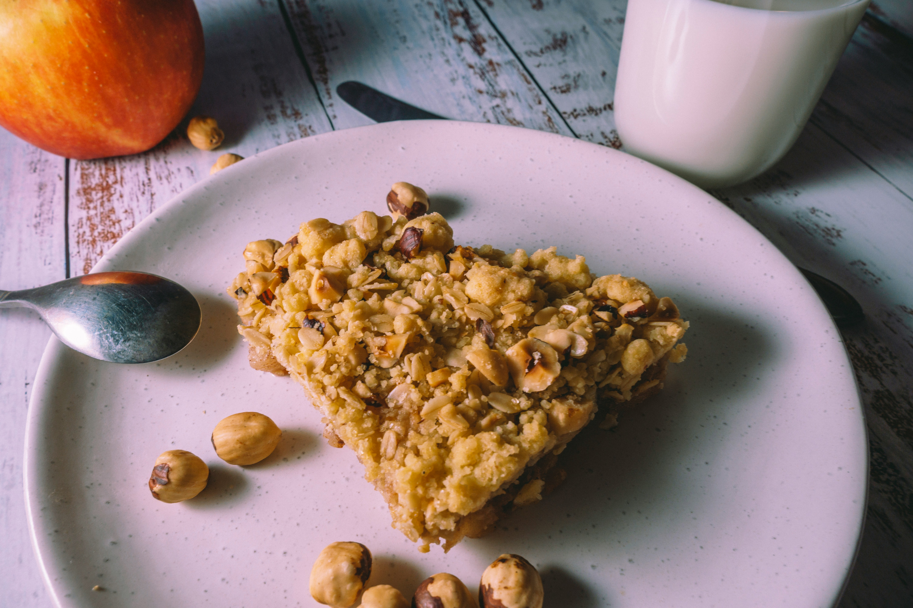

Home
Easy Apple Crisp

Description
This recipe for apple crisp is adapted from a classic 50-year-old recipe.
It works best with fresh, crisp cooking apples.
Ingredients
- 3 apples, peeled, cored, and sliced
- 125g all-purpose flour (sifted)
- 200g white sugar
- ½ teaspoon ground cinnamon
- ¼ teaspoon salt
- 115g butter, softened
Steps
- Preheat the oven to 190°C. Lightly grease an 20x20cm (8-inch) square baking dish.
- Peel, core, and slice the apples. Arrange them evenly in the prepared baking dish.
- In a bowl, sift together the flour, sugar, cinnamon, and salt.
- Add the softened butter and cut it in using a pastry blender or two knives until the mixture resembles
coarse crumbs.
- Sprinkle the crumb mixture evenly over the apples.
- Bake for 40–45 minutes, or until the topping is golden brown.
- Let cool slightly before serving. Best enjoyed warm—optionally with a scoop of vanilla ice cream.